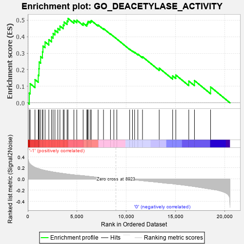
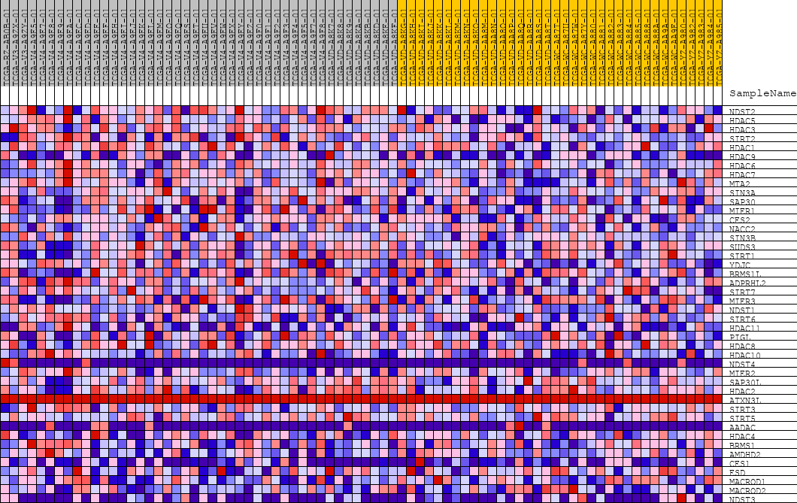
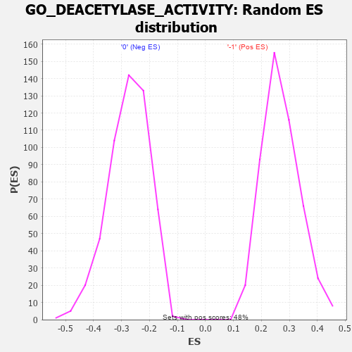

| | | Dataset | GSEAExpression.phenotype_uvm.cls#-1_versus_0 |
| Phenotype | phenotype_uvm.cls#-1_versus_0 |
| Upregulated in class | -1 |
| GeneSet | GO_DEACETYLASE_ACTIVITY |
| Enrichment Score (ES) | 0.51011837 |
| Normalized Enrichment Score (NES) | 1.8929852 |
| Nominal p-value | 0.0 |
| FDR q-value | 0.18530688 |
| FWER p-Value | 0.585 |
Table: GSEA Results Summary

Fig 1: Enrichment plot: GO_DEACETYLASE_ACTIVITY
Profile of the Running ES Score & Positions of GeneSet Members on the Rank Ordered List
| PROBE | DESCRIPTION
(from dataset) | GENE SYMBOL | GENE_TITLE | RANK IN GENE LIST | RANK METRIC SCORE | RUNNING ES | CORE ENRICHMENT | | 1 | NDST2 | na | | | 148 | 0.286 | 0.0588 | Yes |
| 2 | HDAC5 | na | | | 237 | 0.268 | 0.1163 | Yes |
| 3 | HDAC3 | na | | | 729 | 0.209 | 0.1404 | Yes |
| 4 | SIRT2 | na | | | 1059 | 0.187 | 0.1674 | Yes |
| 5 | HDAC1 | na | | | 1128 | 0.183 | 0.2063 | Yes |
| 6 | HDAC9 | na | | | 1149 | 0.182 | 0.2472 | Yes |
| 7 | HDAC6 | na | | | 1300 | 0.173 | 0.2799 | Yes |
| 8 | HDAC7 | na | | | 1486 | 0.164 | 0.3086 | Yes |
| 9 | MTA2 | na | | | 1537 | 0.162 | 0.3435 | Yes |
| 10 | SIN3A | na | | | 1750 | 0.153 | 0.3683 | Yes |
| 11 | SAP30 | na | | | 2132 | 0.140 | 0.3819 | Yes |
| 12 | MIER1 | na | | | 2410 | 0.131 | 0.3985 | Yes |
| 13 | CES2 | na | | | 2567 | 0.126 | 0.4198 | Yes |
| 14 | NACC2 | na | | | 2755 | 0.120 | 0.4384 | Yes |
| 15 | SIN3B | na | | | 3049 | 0.112 | 0.4499 | Yes |
| 16 | SUDS3 | na | | | 3260 | 0.107 | 0.4643 | Yes |
| 17 | SIRT1 | na | | | 3594 | 0.098 | 0.4707 | Yes |
| 18 | YDJC | na | | | 3684 | 0.096 | 0.4886 | Yes |
| 19 | BRMS1L | na | | | 3987 | 0.089 | 0.4945 | Yes |
| 20 | ADPRHL2 | na | | | 4081 | 0.088 | 0.5101 | Yes |
| 21 | SIRT7 | na | | | 4676 | 0.075 | 0.4983 | No |
| 22 | MIER3 | na | | | 4972 | 0.068 | 0.4996 | No |
| 23 | NDST1 | na | | | 5614 | 0.059 | 0.4819 | No |
| 24 | SIRT6 | na | | | 5988 | 0.052 | 0.4757 | No |
| 25 | HDAC11 | na | | | 6058 | 0.051 | 0.4840 | No |
| 26 | PIGL | na | | | 6124 | 0.049 | 0.4922 | No |
| 27 | HDAC8 | na | | | 6332 | 0.046 | 0.4926 | No |
| 28 | HDAC10 | na | | | 6440 | 0.043 | 0.4974 | No |
| 29 | NDST4 | na | | | 7135 | 0.031 | 0.4706 | No |
| 30 | MIER2 | na | | | 7681 | 0.022 | 0.4490 | No |
| 31 | SAP30L | na | | | 8390 | 0.009 | 0.4165 | No |
| 32 | HDAC2 | na | | | 8730 | 0.003 | 0.4006 | No |
| 33 | ATXN3L | na | | | 9035 | 0.000 | 0.3858 | No |
| 34 | SIRT3 | na | | | 10336 | -0.007 | 0.3239 | No |
| 35 | SIRT5 | na | | | 10622 | -0.012 | 0.3127 | No |
| 36 | AADAC | na | | | 10836 | -0.016 | 0.3059 | No |
| 37 | HDAC4 | na | | | 11170 | -0.022 | 0.2947 | No |
| 38 | BRMS1 | na | | | 11639 | -0.030 | 0.2787 | No |
| 39 | AMDHD2 | na | | | 13334 | -0.061 | 0.2100 | No |
| 40 | CES1 | na | | | 14697 | -0.084 | 0.1629 | No |
| 41 | ESD | na | | | 15018 | -0.092 | 0.1684 | No |
| 42 | MACROD1 | na | | | 16336 | -0.120 | 0.1318 | No |
| 43 | MACROD2 | na | | | 16911 | -0.135 | 0.1348 | No |
| 44 | NDST3 | na | | | 18549 | -0.179 | 0.0962 | No |
Table: GSEA details [plain text format]

Fig 2: GO_DEACETYLASE_ACTIVITY
Blue-Pink O' Gram in the Space of the Analyzed GeneSet

Fig 3: GO_DEACETYLASE_ACTIVITY: Random ES distribution
Gene set null distribution of ES for GO_DEACETYLASE_ACTIVITY